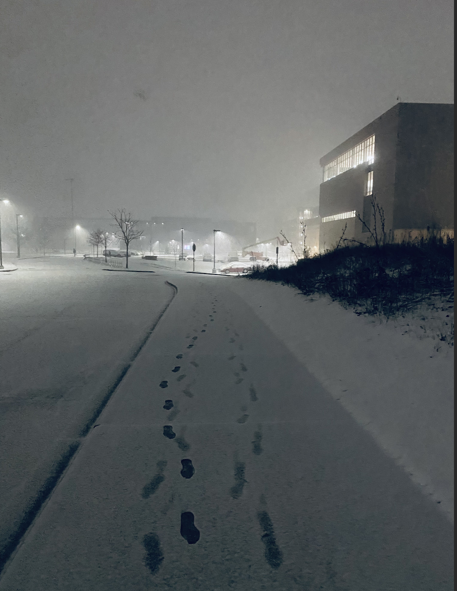

My name is Joseph Sim and I am a prospective student that is looking to learn more about marketing. I have hobbies in making music and creating content. I also have experience in photography and have used that to make some of my content before. To the left is a photo that I took a while back of the suburb cityscape area in the snowy season.